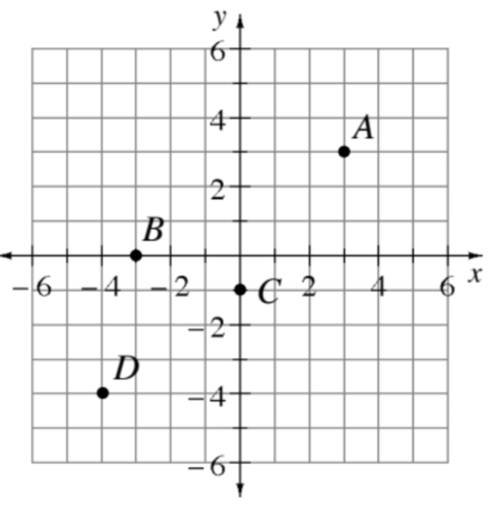

Use De Moivre’s Theorem to evaluate \(\left(\cos\left(\frac{\pi}{12}\right)+i\sin\left(\frac{\pi}{12}\right)\right)^6\).
Use graph. Points are plotted on a Cartesian grid. What are the polar coordinates of these points?

Solve the system: \(\log_2(A)+\log_2(B)=4\)
\(\log_3(A)-\log_3(B)=2\)
Given \(\cos(A)=\frac{5}{13}\) where \(0<A<\frac{\pi}{2}\), evaluate \(\csc(A)\) and \(\cos(2A)\).
Given \(f(x)=\frac{4x-5}{2x-3}\).
Rewrite \(f(x)\) in the form of \(y=k+\frac{a}{2x-3}\).
State all of the asymptotes in the graph.
Evaluate \(\lim\limits_{x\to -\infty} f(x)\).
Evaluate \(\lim\limits_{x\to 1.5^+} f(x)\).
Express the function \(y=x^3+1\) and its inverse using parametric equations.
Ms. Lang determines her children’s allowance based on the following situations: The amount of money they each receive in a week is directly proportional to the number of hours of work they each have done in the yard and inversely proportional to \(5-\text{GPA}\) where GPA is the grade point average from the last report card. Dana received \(\$14.40\) this week. Her last report card had a GPA of 3.5 and she worked 10 hours in the yard during the week.
Write the formula that Ms. Lang uses to determine the amount of money she will give each child each week.
This week Kaitlyn worked 15 hours in the yard and received \(\$20\). What was her GPA from her last report card?
This problem is a checkpoint for operations with matrices.
Let \(A=\begin{bmatrix}-4&8\\-1&-12\end{bmatrix}\), \(B=\begin{bmatrix}-9&0&10\\-10&3&-8\end{bmatrix}\), \(C=\begin{bmatrix}-8&0\\0&-5\\-8&-11\end{bmatrix}\), and \(D=\begin{bmatrix}2&1&6\\-7&-8&-11\end{bmatrix}\). Compute each of the following matrices or values, if possible.
\(2B-D\)
\(BC\)
\(CB\)
\(\det(A)\)
\(A^{-1}\)
\(\det(C)\)
Check your answers by referring to the selected answers located at the back of your book.
Ideally at this point you are comfortable working with these types of problems and can complete them correctly. If you feel that you need more confidence when completing these types of problems, then review the Operations with Matrices Checkpoint materials available at cpm.org and try the practice problems provided. From this point on, you will be expected to do problems like these correctly and with confidence.
What are the four fourth roots of \(-16\)?
Given \(z_1=3\left(\cos\left(\frac{\pi}{2}\right)+i\sin\left(\frac{\pi}{2}\right)\right)\) and \(z_2=9\left(\cos\left(\frac{3\pi}{4}\right)+i\sin\left(\frac{3\pi}{4}\right)\right)\), evaluate \(z_1z_2\) and \(\frac{z_1}{z_2}\). Express your answers in both trigonometric (polar) and \(a+bi\) forms.
Suppose \(g(x)=3^x\). Approximate the instantaneous rate of change at \(x=2\) to the nearest 0.001.
Show that \(\sin(4\theta)=4\sin(\theta)\cos(\theta)\cos(2\theta)\).
Rewrite the following rational expression as a sum of two fractions with linear denominators by using partial fraction decomposition.
\(\frac{13x+2}{(-2-x)(x-2)}\)
What is the angle between two forces of 23 N and 90 N if the resultant force is 107 N?
Suppose \(R\) is the linear transformation matrix for 45° counterclockwise rotation and \(M\) is the linear transformation matrix for horizontal reflection.
Write the matrix associated with \(R\).
Write the matrix associated with \(M\).
Write the matrix for the composition of \(R\) followed by \(M\).
Is the composition of \(M\) followed by \(R\) the same as your result in part (c)? Explain.
Write and solve an absolute value inequality for the following situation.
The gas consumption of a particular car averages 30 miles per gallon on the highway, but the actual mileage varies from the average by at most 4 miles per gallon. How far can the car travel on a 12-gallon tank of gas?